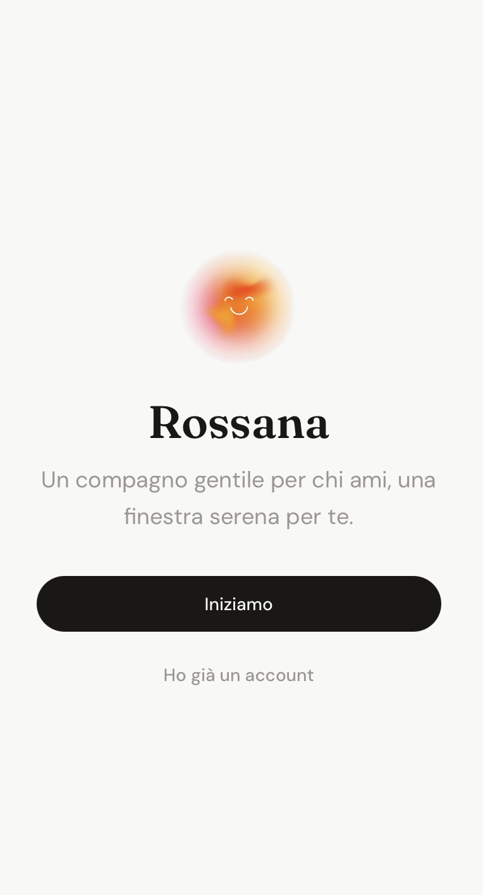
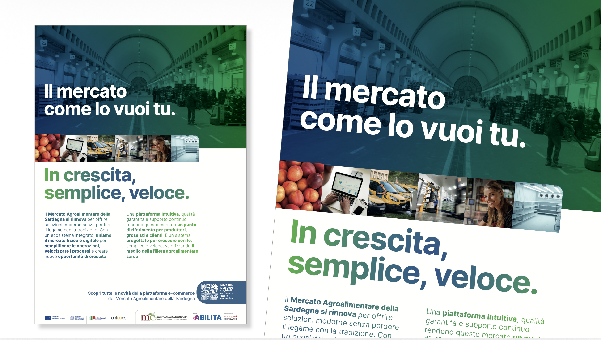
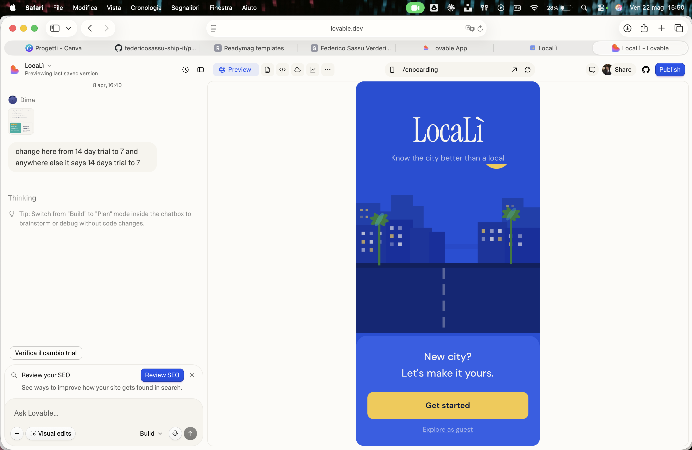

Venture · H-FarmR.O.S.S.
AI companion for the elderly. Not a monitoring device — a domestic presence. I run the commercial and financial engine: market sizing, unit economics, investor relations.

Economics graduate · H-Farm pre-accelerator · Co-founder R.O.S.S. · MSc Digital Transformation
At 17 I launched a Shopify store — my first attempt at building something from scratch. After a degree in Economics in Cagliari, I chose H-Farm's MSc in Digital Transformation & Entrepreneurship deliberately: I wanted to be in an environment where startups aren't studied but lived, with the explicit goal of applying to the pre-acceleration program. I was selected, and worked on Agromercato.com — a B2B marketplace connecting wholesale produce operators with professional buyers, targeting a market of €150M+ turnover. During my master's I built LocaLì, a platform for international students navigating an unfamiliar city — born from a problem I lived firsthand during Erasmus. I'm now co-founder of ROSS, an AI robot companion designed to slow cognitive decline in elderly patients, currently in H-Farm's venture building program.
Business and market thinking applied to early-stage ventures. I identify problems, build the case around them, and execute under uncertainty.

Venture · H-FarmAI companion for the elderly. Not a monitoring device — a domestic presence. I run the commercial and financial engine: market sizing, unit economics, investor relations.
RAG voice agent for MANTA Group — aerospace supplier to Leonardo & Boeing. 500+ pages of technical manuals queryable by voice. Delivered in a 1-month sprint, led a team of 4.

Pre-Accelerator · H-FarmFirst startup incubation at H-Farm Startup Centre. Three months building and validating the strategy for a B2B wholesale food marketplace. Market research, financial model, pitch at Ecommerce Food Forum Bologna.

Live MVPWe killed our first startup when the financial model didn't close. Then built LocaLì — a city discovery app for international students. Live MVP at localit.lovable.app.